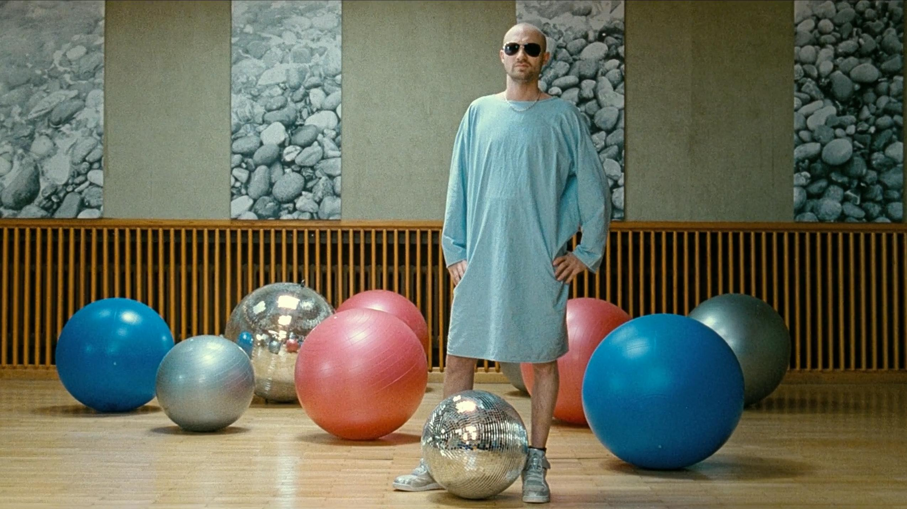

×
Paul Kalkbrenner
Paul Kalkbrenner es un productor de música electrónica alemán, conocido por su estilo melódico y emocional. Alcanzó fama internacional con la película "Berlin Calling", en la que también actuó.
Me merezco una buena nota por haberte descubierto a este pedazo de artista.
Disfruta del temazo, ¡aviva el espíritu!
